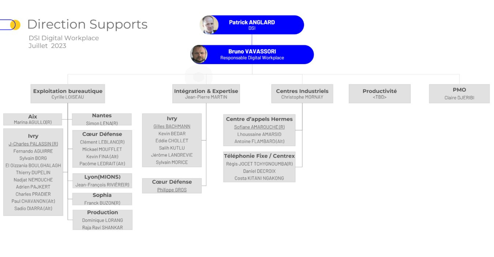
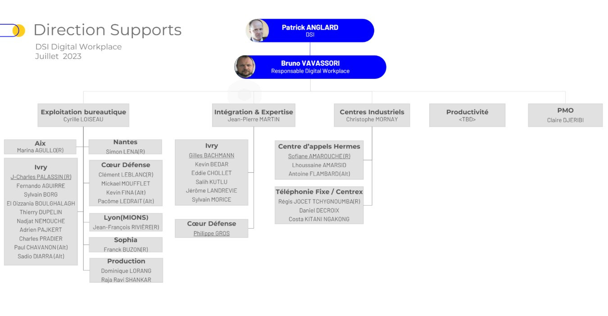
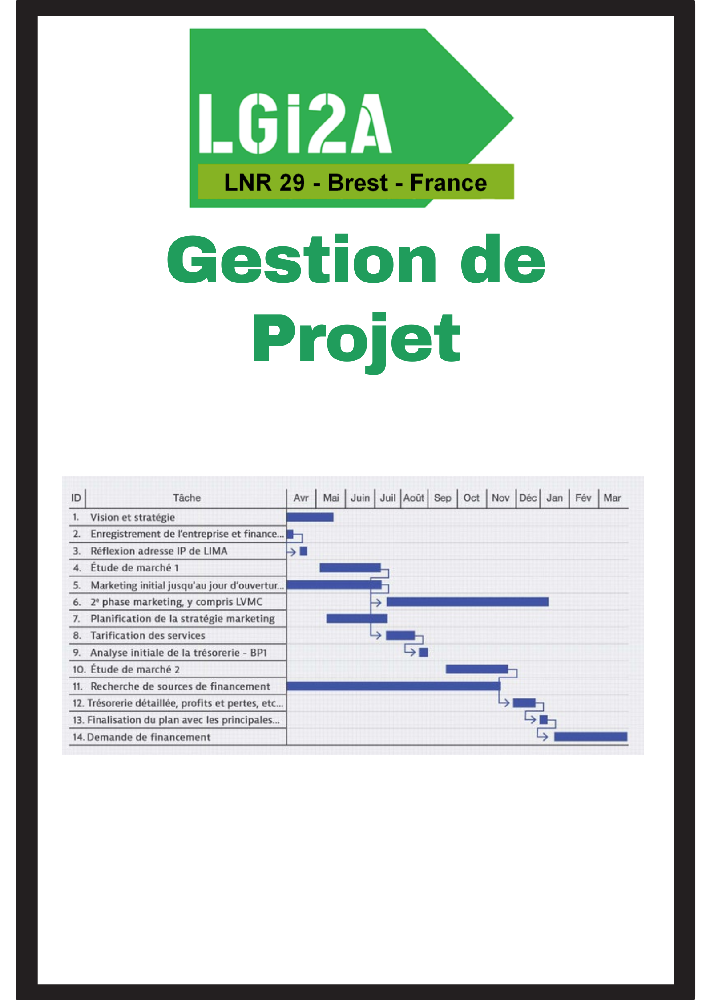
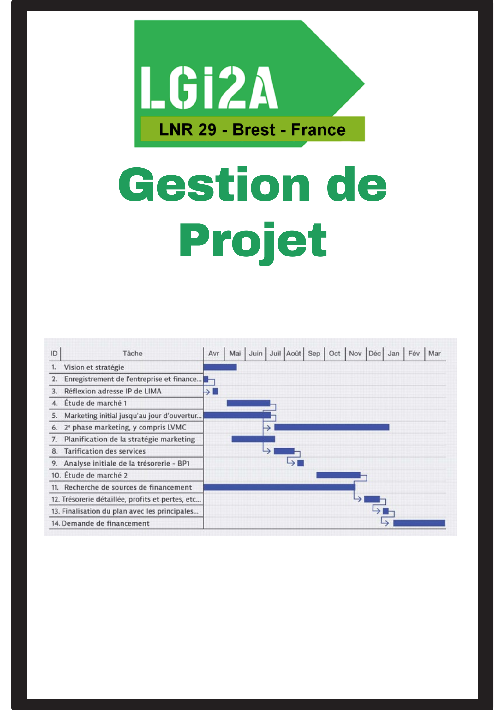

BTS SIO option SISR
BTS Services Informatiques aux Organisations (SIO)
option A solutions d'infrastructure, systèmes et réseaux (SISR)
L'élève du BTS SIO option SISR acquiert les compétences de trois domaines d'activités repésenté par 3 blocs
BLOC 1 = Support et mise à disposition de services informatiques : l'élève sera capable de répondre aux attentes des utilisateurs en assurant la disponibilité des services informatiques existants ; il sera aussi en mesure de prendre en compte les besoins informatiques dans l'entreprise et d'accompagner la transformation numérique des services informatiques, tout en maintenant son employabilité. Il acquiert ainsi les compétences pour gérer le patrimoine informatique, répondre aux incidents, développer la présence de l'entreprise sur le Web, organiser son propre développement professionnel.
BLOC 2 = Administration des systèmes et des réseaux: le titulaire participera à l'administration des systèmes et du réseau, il sera capable de modifier ou d'adapter les solutions d'infrastructure ainsi que la qualité de service des équipements du réseaux. Il acquiert ainsi les compétences pour concevoir une solution d'infrastructure réseau, l'installer, la tester et la déployer. L'élève apprend aussi à administrer et superviser ce réseau.
BLOC 3 = Cybersécurité des services informatiques: l'élève est formé à la cybersécurité et à son intégration dans l'entreprise en tenant compte des dimensions techniques, organisationnelles, juridiques...Il obtient ainsi des compétences sur la protection des données et l'identité numérique de l'entreprise, la sécurisation des équipements et usages des utilisateurs. Option SISR: il est formé à la cybersécurisation d'une infrastructure réseau, d'un système ou d'un service informatique.
Source: Site OnisepPrésentation de l'entreprise 
Docaposte est une entreprise française spécialisée dans la transformation numérique et la gestion des processus métiers pour les entreprises et les administrations.
Filiale du groupe La Poste, Docaposte propose des solutions dans les domaines de la dématérialisation, de la gestion de l'identité numérique, de la cybersécurité, du traitement des paiements, de la logistique et de la communication multicanale.
Elle accompagne ainsi ses clients dans leur transition vers le digital en leur offrant des solutions innovantes et personnalisées.
Avec plus de 7 500 collaborateurs et un chiffre d'affaires d'un milliard d'euros, Docaposte est un acteur majeur de la transformation digitale en France.
Image du site d'Ivry sur Seine (Siège social) Localisation du site d'Ivry sur Seine

Lieux d'apprentissage
Etant technicien support bureautique en alternance, mon poste de travail est situé au DW (Digital Workplace) ancienement le COB (centre des opréation bureautique),
c'est d'ici que je répond aux demandes JIRA (Logiciel de ticketing) .
L'exemple le plus fréquent est l'arrivée d'un nouveau collaborateur qui aura besoin d'un email Docaposte et d'un poste de travail.
Une fois le PC déployé nous pouvons applliquer des règles de sécurité via des GPO ou vérifier l'état des mises à jour sur LanSweeper (Logiciel de gestion de parc informatique).
 

Documentation


LGI2A / Mise en situation au Lycée Paul BERT
Le groupe LGi2A (Laboratoires Gouvernementaux pour l'industrie Agro-Alimentaire) est issu du regroupement de plusieurs laboratoires français.
En France, ce réseau de laboratoires dépend directement du ministère de l'agriculture et de la pêche.
Employant plus de 3000 collaborateurs, le groupe LGi2A est principalement présent sur le territoire français (Annexe NOI) mais il travaille en collaboration avec des laboratoires partenaires installés sur toute la zone Europe.
Par cette action, il a triplé son chiffre d'affaires, doublé ses effectifs et est devenu leader dans la filière sur le marché européen.
Schèma


 

Documentation


CFA de Créteil
Le CFA de l'académie de Créteil prépare par la voie de l'apprentissage à tous les diplômes technologiques et professionnels de l'éducation nationale:
- Certificat d'Aptitude Professionnel (CAP)
- Baccalauréat Professionnel (BP)
- Brevet de Technicien Supérieur (BTS)
- Mentions Complémentaires (MC)
La formation pratique de l'apprenti se fait principalement dans l'entreprise, la formation théorique étant assurée par le CFA.
Selon les diplômes préparés, le temps de formation en centre varie de 400 à 675 heures minimum par année. Le parcours de formation suppose donc une articulation étroite entre les deux lieux où l'apprenti acquiert des compétences professionnelles.
Les appentis ont un statut de jeune travailleur salarié en entreprise, sous la responsabilité d'un maître d'apprentissage. Ils ont conclu un contrat de travail.
12 RUE GEORGES ENESCO 94025 CRETEIL CEDEX
Site du Centre de Formation des Aprentis